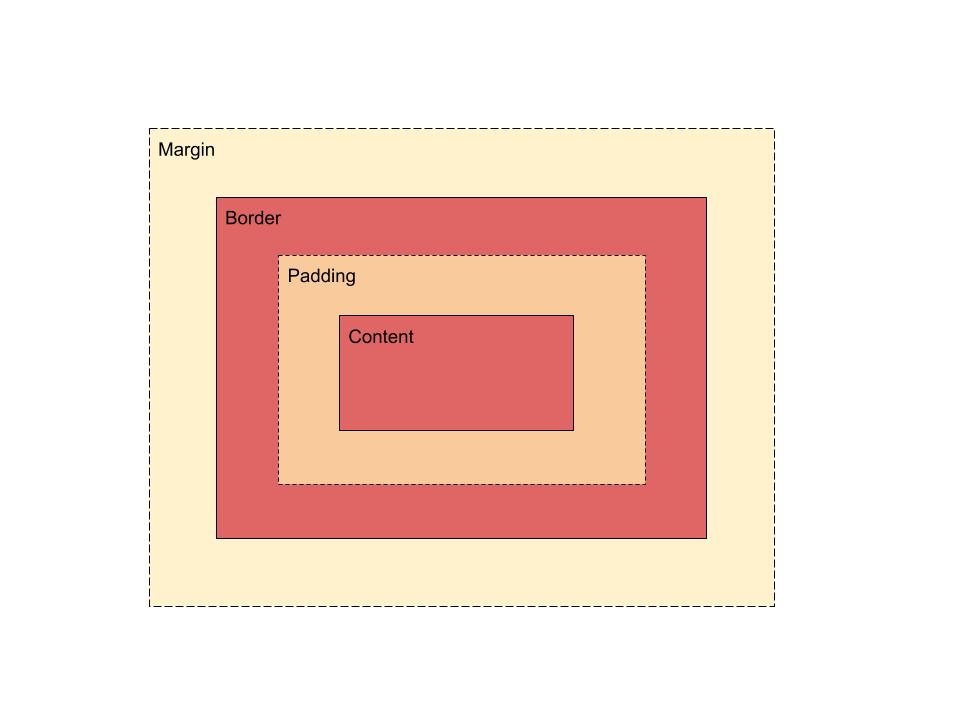

What is a box model?
According to wikipedia: "a box model refers to how HTML elements are modeled in browser engines and how dimension of those HTML elements are derived from CSS properties." It contains four(4) parts or areas. They defines by theirs edges: margin, border, padding, and content.
How does it look like?
This diagram below represent feature of the box model.

Description of some keywords:
- content-box: According to MDN web docs: "content-box is the initial and default value as specified by the CSS standard. The width and height properties include the content, but does not include the padding, border, or margin."
- padding-box:padding box is the transparent area which is next to the content box.
- border-box: According to MDN web docs: "border-box is the width and height properties include the content, padding, and border, but do not include the margin.
Description:
- border:According to Tech On The Net web, border property defines the width, line style, and color of the border of a box. It is a shorthand property for setting the border-width, border-style, and border-color CSS properties
- margin: According to MDN web docs: "sets the margin area on all fours sides of an elements
- padding: According to Tech On The Net web, padding property defines the padding space on all sides of an element.
- display: According to MDN web docs, The display CSS property sets whether an element is treated as a block or inline element and the layout used for its children, such as flow layout, grid or flex.
- box-sizing: sets the size of the box, such as height and the width.
understanding
- As my understanding, when two differently sized margins of two different boxes collide, one of it may disappear or behave in the different way.
- I think, width of an element= (left border width + left padding width + right padding width + right padding border), it is different from box-sizing= border-box because we have to set all element values whereas the border-box you can set an element value.
- Display inline-block allows to set width and height of .However, the others don't.